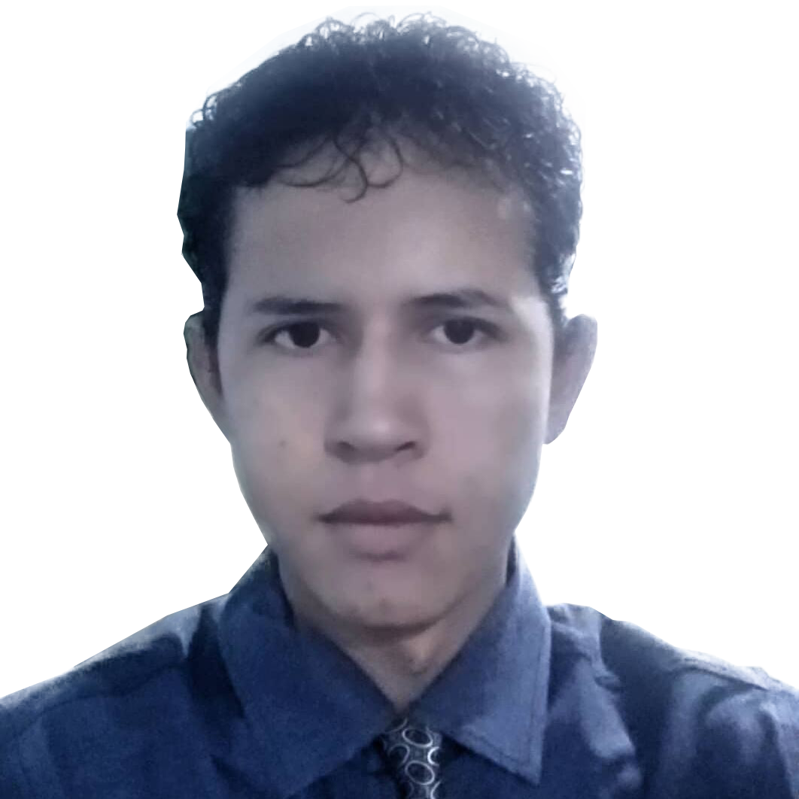

PORTFÓLIO 2.0
PORTFÓLIO ATUAL
Meu trabalho hoje
Uma nova fase da vitrine profissional, com páginas e projetos mais recentes.
Conhecer o portfólioPRIMEIRA FASE · PORTFÓLIO HISTÓRICO
Este é um registro das minhas primeiras experiências com front-end. A base que começou com HTML, CSS e JavaScript e evoluiu para novos aplicativos, ferramentas e jogos.
Esta página preserva a história do projeto. Para informações profissionais recentes, consulte o Portfólio 2.0.

SOBRE O ARQUIVO
O primeiro portfólio reunia estudos, experimentos de navegação, animações e apresentação pessoal. Ele tinha uma estética tecnológica escura, menus animados e interações feitas com JavaScript e jQuery.
Esta edição moderniza a apresentação para celulares e leitores de tela sem apagar o código de origem. A versão original pode ser consultada na branch de arquivo do GitHub.
Consultar o código original preservadoIDEIAS QUE SE TRANSFORMARAM
Algumas das experiências que representam a evolução dos estudos para aplicações e jogos.
4 projetos
Uma nova fase da vitrine profissional, com páginas e projetos mais recentes.
Conhecer o portfólioUm projeto de automação visual para criar cartazes e materiais de oferta.
Explorar repositórioUm mundo de exploração, criaturas e sistemas de fazenda em desenvolvimento.
Acompanhar o projetoUma experiência web de ação e plataformas inspirada por jogos multiplayer clássicos.
Acompanhar o projetoDA PRIMEIRA VERSÃO AO PRESENTE
Este portfólio continua disponível como registro histórico, enquanto o desenvolvimento segue em repositórios próprios.
Experimentos em HTML, CSS, JavaScript e apresentações animadas.
Novas interfaces, ferramentas e aplicações web com fluxos reais.
Desenvolvimento de mundos, personagens e sistemas interativos.
CONTINUE EXPLORANDO
Veja o trabalho mais atual e acompanhe os próximos projetos nas plataformas de desenvolvimento.